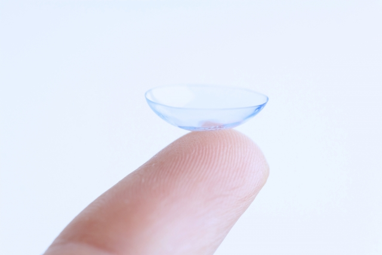

診療内容
眼鏡・コンタクトレンズ
適切な眼鏡・コンタクトレンズの使用や正しいケアがないと、さまざまな目の障害を引き起こすことがあります。
眼鏡とコンタクトレンズの処方
※眼鏡処方・コンタクトレンズ処方の検査は時間を要するため、原則予約制で行っております。
予約なしでご来院された場合、混み具合によっては当日はお断りさせていただき、後日の予約をとらせて頂く事がございます。
あらかじめご了承ください。

コンタクトレンズ処方
コンタクトレンズ処方では視力や目の状態を確認し、適したレンズを選びます。装用練習やケア方法の説明を行い、問題がなければ処方となります。目はとてもデリケートなため、正しい使い方と定期検査が大切です。

眼鏡処方
視力検査に基づき、近視・遠視・乱視などに応じた最適な眼鏡を処方しています。快適にお使いいただけるよう、レンズやフレームもご提案します。コンタクト使用中の方も、目の負担軽減や万一に備え、眼鏡の併用をおすすめします。